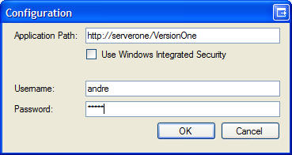
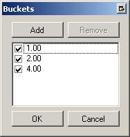
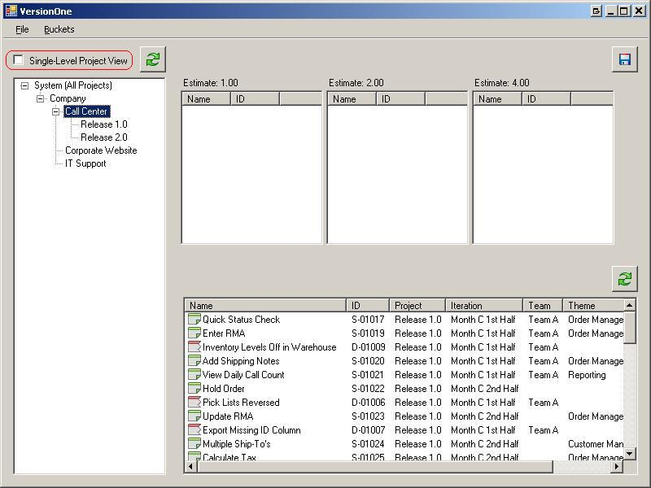
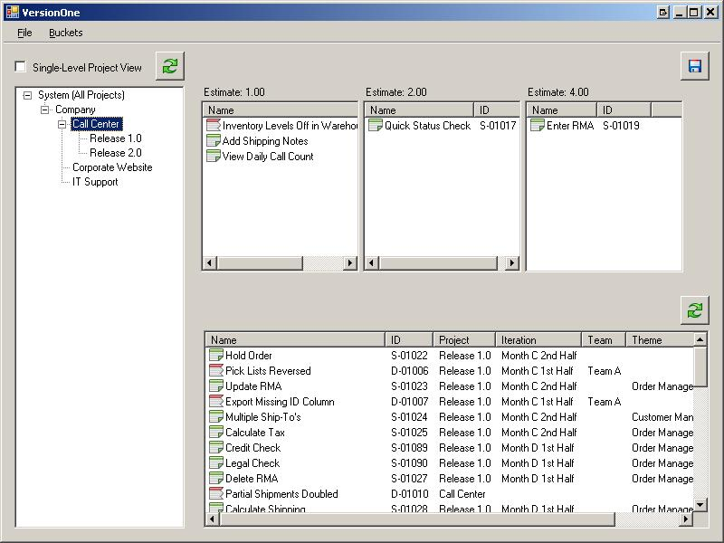

VersionOne Estimation Tool
Introduction
The VersionOne Estimation Tool allows you to easily divide VersionOne items into an arbitrary number of groupings or "buckets" and then apply estimate values to all of the items based on which bucket it is in.
Contents
System Requirements
- Windows:
- Tested with Windows 7
- VersionOne:
- 8.0 or above, including Team Edition
Download
The latest version of V1EstimationTool is available from the VersionOne Community site
Configuration
- Configure VersionOne Connection
When you first run the VersionOne Estimation Tool, click File -> Configure and enter the URL and login credentials for your installation.

Once this is accomplished successfully, click the refresh button above the project tree on the left to see the available projects.
- Configure Estimation Buckets
The program defaults to three estimation buckets with values of 1, 2, and 4. This can be changed by clicking Buckets -> Configure. The configuration window that appears allows you to add and remove the estimate values that correspond to the buckets.

Usage
- Choose Project Scope
Selecting a project node on the tree will populate item list on the bottom right of the window.
The Single-Level Project View checkbox will prevent items from child-projects of the currently selected project in the tree from being shown in the item list.

- Drag and Drop to Estimate
Drag and drop items from the list to the estimate buckets.

Once all of the items are in the appropriate buckets, press the save button on the upper right to apply the estimate values to the items.